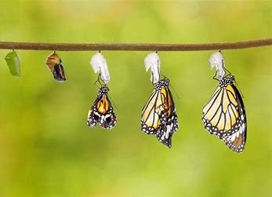
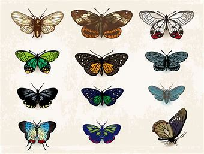
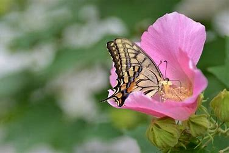

蝴蝶与自然科学
蝴蝶在自然科学中扮演着重要的角色，涉及到生物学、生态学和进化学等多个学科领域。
生物学
蝴蝶是昆虫的一种，属于鳞翅目。生物学家研究蝴蝶的解剖结构、生命周期、生殖方式等，以更深入地了解它们的生物学特性。蝴蝶的生命周期包括卵、幼虫、蛹和成虫四个阶段，这对生物学研究提供了丰富的素材。

进化学
蝴蝶的进化历程也是进化学研究的对象之一。科学家通过研究蝴蝶的化石记录、遗传学信息以及物种间的演化关系，可以了解它们是如何适应不同环境、发展出不同的形态和行为。

生态学
蝴蝶在生态系统中扮演着重要的角色，特别是在传粉过程中。很多蝴蝶是植物的重要传粉媒介，它们在采食花蜜的过程中将花粉带到其他植物上，促进了植物的繁殖。这种相互作用对生态平衡和生态系统的稳定性至关重要。
